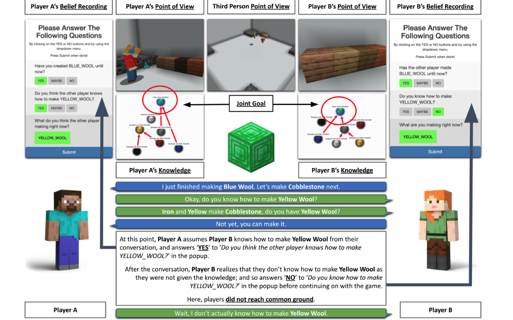

[TOC]
- Title: MINDCRAFT: Theory of Mind Modeling for Situated Dialogue in Collaborative Tasks
- Author: Cristian-Paul Bara et. al.
- Publish Year: 2021 EMNLP
- Review Date: 12 Nov 2021
Summary of paper
This needs to be only 1-3 sentences, but it demonstrates that you understand the paper and, moreover, can summarize it more concisely than the author in his abstract.
The contribution of this paper is the mind modelling dataset (Using Minecraft environment).
The dataset collects the players’ belief during their playing period, by asking three types of mind modelling questions:
- Completed task status
- the player is asked about whether a specific material has been created.
- Player knowledge
- ask whether the player (themselves and the teammates) knows some crafting knowledge
- Player’s Current task
- ask what they believe their partner to be making
The author regarded this as mind modelling (a.k.a, belief recording).
After that, the dataset collects players’ timestamped dialogue utterances in the chat box, their questions and answers to the periodic popups for belief recording, internal game logs that represent the game state, and three sets of video recording in different perspectives.

Interestingly, the accuracy that the human player predicts partner’s belief increases from 40% (low) to 80% (high) as they communicate more. This shows that
- communication cause the common ground to evolve.
- with limited, partial, knowledge at the early stage, the performance of predicting partner’s belief is just bad.
In the Second Section, the author introdueced LSTM and Transformer baseline model to “infer players’ beliefs” (i.e., the problem for the model is to predict the human player’s answer on the belief recording questions using the observatoins the player preceived) (the potential contribution of this research problem is to better understand human collaborative behaviours and several theory of mind tasks)
In the end, the author expected more types of research questions that can use their dataset.
Some key terms
belief state
A belief state encapsulates the beliefs an agent has about its current state
Good things about the paper (one paragraph)
This is not always necessary, especially when the review is generally favorable. However, it is strongly recommended if the review is critical. Such introductions are good psychology if you want the author to drastically revise the paper.
The belief recording dataset is worth further research.
-
more can be discovered for the phenomenon — human’s accuracy of belief increases as communications and collaborations go on. This gradually transformation looks common and important in human-human interaction, thus it might be also applicable in human-machine interaction, and thus more needs to be discovered.
-
Yes, common ground formalisation is essential for collaboration tasks.
Major comments
Discuss the author’s assumptions, technical approach, analysis, results, conclusions, reference, etc. Be constructive, if possible, by suggesting improvements.
The experiment in the Second section — baseline computational model — is not rigorous.
When evaluating the performance of different models, the author should at least compare the number of parameters in both LSTM and Transformer models rather than merely comparing the architecture. In fact, there are more that can affect the performance.
Also the author did not provide detailed explanation about why one architecture could outperform the other. I believe the readers want to know more.
Incomprehension
List what you don’t understand.
Should have a basic intro about Thoery of mind modelling in Introduction section, otherwise I still cannot understand why the author designed ’the three questions’ and also why three types of questions are adequate for belief recording.
Potential future work
List what you can improve from the work
Yes, as we can see, the evolution of common ground (shared knowledge) is a really important topic for human-machine interaction, more needs to be discovered. E.g.,
- how could an intelligent agent reacts when it shares limtied knowledge with the partner.
- what kinds of communication are effective in this collaboration work so that the common ground can evolve efficently.